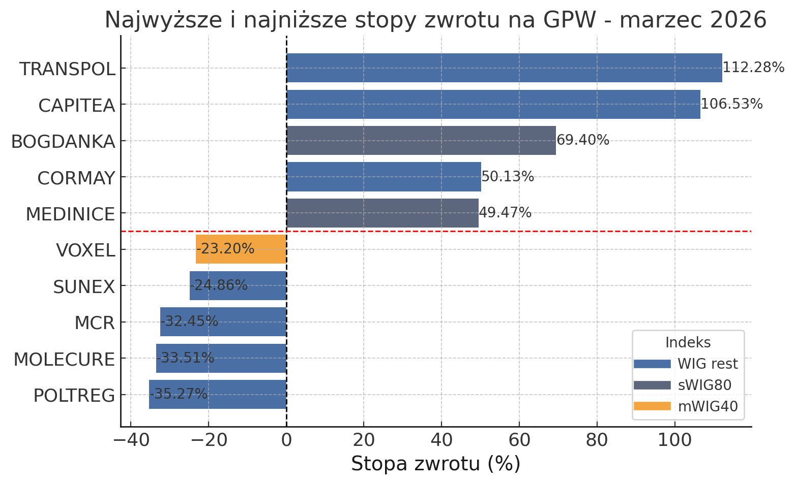
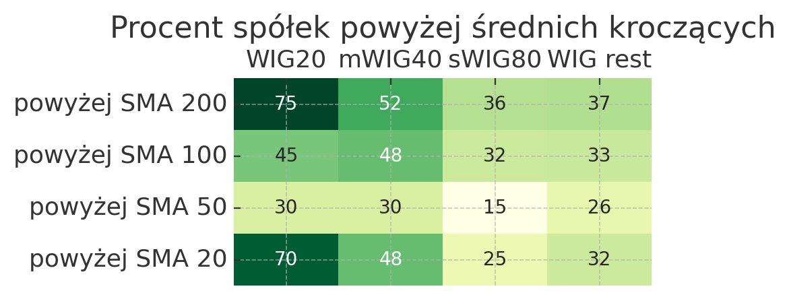
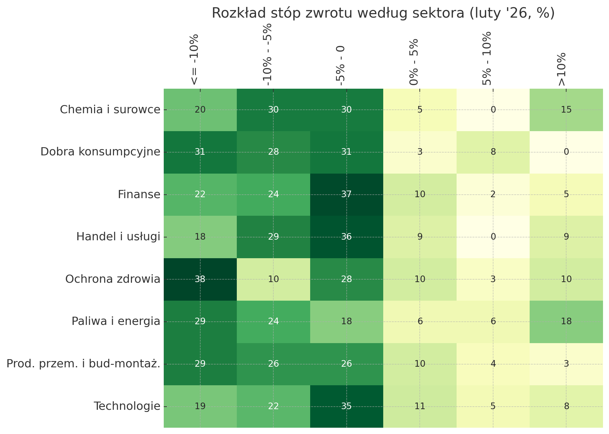
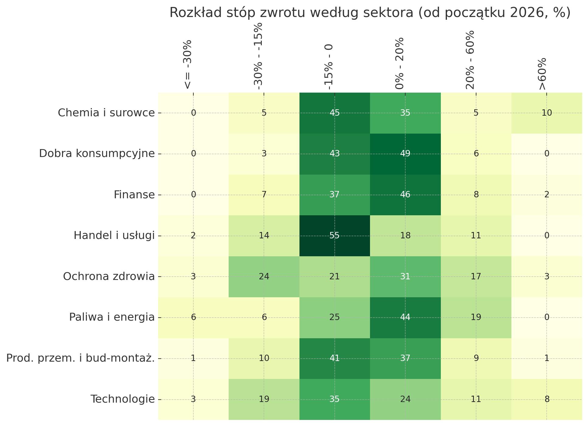
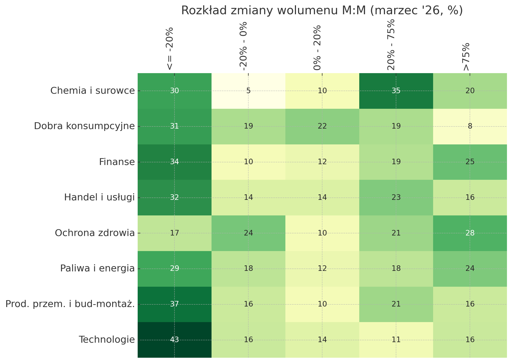
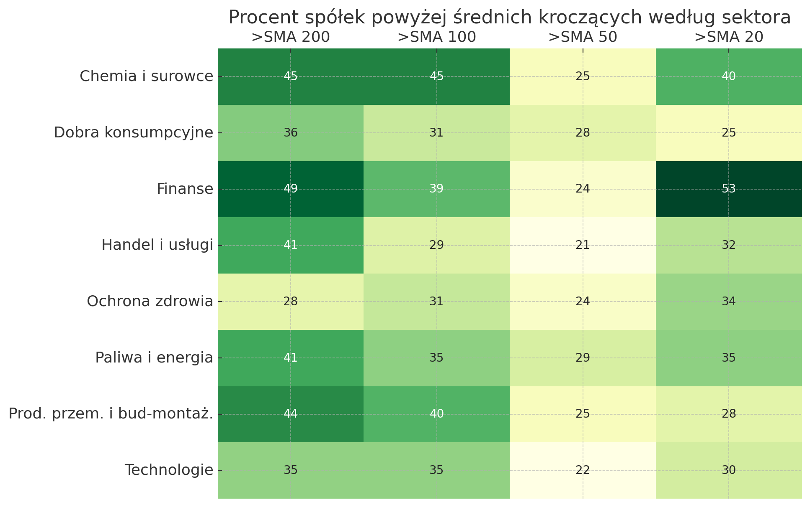

Zapraszam na podsumowanie marca na Giełdzie Papierów Wartościowych, a więc miesiąca spodziewanego spowolnienia, przekształconego w miesiąc spadków przez sytuację na Bliskim Wschodzie.
Z kwestii techniczno-organizacyjnych, na wstępie chciałbym wspomnieć o marcowych rewizjach indeksów GPW, w skutek których doszło do kilku roszad:
WIG20:
IN: Tauron
OUT: Orange
mWIG40:
IN: Creotech, Orange, Polimex
OUT: 11BIT, Huuuge, Tauron
sWIG80:
IN: 11BIT, Answear, Huuuge, Medinice, Zremb
OUT: Creotech, MCR, ML System, Polimex, XTPL
Dodatkowo w trakcie miesiąca z uwagi na kwestie regulacyjne indeks WIG opuściły dwie spółki: Atlantis oraz Lsisoft.
Zestawienie największych wzostów i spadków na GPW w marcu:
Stopy zwrotu i wolumen
| Indeks | WIG20 | mWIG40 | sWIG80 | WIG rest | Razem | ||||
|---|---|---|---|---|---|---|---|---|---|
| liczba | % | liczba | % | liczba | % | liczba | % | liczba | |
| Stopa zwrotu | |||||||||
| Duży spadek (<= 10%) | 5.0 | 25.0 | 8.0 | 20.0 | 20.0 | 25.00 | 48.0 | 26.40 | 81 |
| Spadek (-10% - -5%) | 7.0 | 35.0 | 10.0 | 25.0 | 25.0 | 31.25 | 37.0 | 20.35 | 79 |
| Lekki spadek (-5% - 0%) | 5.0 | 25.0 | 14.0 | 35.0 | 23.0 | 28.75 | 59.0 | 32.45 | 101 |
| Lekki wzrost (0% - 5%) | 1.0 | 5.0 | 3.0 | 7.5 | 6.0 | 7.50 | 18.0 | 9.90 | 28 |
| Wzrost (5% - 10%) | 1.0 | 5.0 | 2.0 | 5.0 | 2.0 | 2.50 | 6.0 | 3.30 | 11 |
| Duży wzrost (> 10%) | 1.0 | 5.0 | 3.0 | 7.5 | 4.0 | 5.00 | 14.0 | 7.70 | 22 |
| Razem | 20.0 | 100.0 | 40.0 | 100.0 | 80.0 | 100.00 | 182.0 | 100.10 | 322 |
| Indeks | WIG20 | mWIG40 | sWIG80 | WIG rest | Razem | ||||
|---|---|---|---|---|---|---|---|---|---|
| liczba | % | liczba | % | liczba | % | liczba | % | liczba | |
| Stopa zwrotu | |||||||||
| Bardzo duży spadek (<= 30%) | 0.0 | 0.00 | 0.0 | 0.0 | 0.0 | 0.00 | 5.0 | 2.75 | 5 |
| Duży spadek (-30% - -15%) | 2.0 | 10.52 | 4.0 | 10.0 | 11.0 | 13.75 | 19.0 | 10.45 | 36 |
| Spadek (-15% - 0%) | 6.0 | 31.56 | 15.0 | 37.5 | 35.0 | 43.75 | 72.0 | 39.60 | 128 |
| Neutralnie / lekki wzrost (0% - 20%) | 10.0 | 52.60 | 15.0 | 37.5 | 25.0 | 31.25 | 61.0 | 33.55 | 111 |
| Duży wzrost (20% - 60%) | 1.0 | 5.26 | 5.0 | 12.5 | 7.0 | 8.75 | 19.0 | 10.45 | 32 |
| Ekstremalny wzrost (> 60%) | 0.0 | 0.00 | 1.0 | 2.5 | 2.0 | 2.50 | 5.0 | 2.75 | 8 |
| Razem | 19.0 | 99.94 | 40.0 | 100.0 | 80.0 | 100.00 | 181.0 | 99.55 | 320 |
| Indeks | WIG20 | mWIG40 | sWIG80 | WIG rest | Razem | ||||
|---|---|---|---|---|---|---|---|---|---|
| liczba | % | liczba | % | liczba | % | liczba | % | liczba | |
| Zmiana % wolumenu M:M | |||||||||
| Znaczny spadek (<= -20%) | 2.0 | 10.0 | 4.0 | 10.0 | 21.0 | 26.25 | 79.0 | 43.45 | 106 |
| Umiarkowany spadek (-20% - 0%) | 4.0 | 20.0 | 5.0 | 12.5 | 18.0 | 22.50 | 22.0 | 12.10 | 49 |
| Umiarkowany wzrost (0% - 20%) | 3.0 | 15.0 | 11.0 | 27.5 | 10.0 | 12.50 | 18.0 | 9.90 | 42 |
| Znaczny wzrost (20% - 75%) | 9.0 | 45.0 | 13.0 | 32.5 | 16.0 | 20.00 | 27.0 | 14.85 | 65 |
| Ekstremalny wzrost (> 75%) | 2.0 | 10.0 | 7.0 | 17.5 | 15.0 | 18.75 | 36.0 | 19.80 | 60 |
| Razem | 20.0 | 100.0 | 40.0 | 100.0 | 80.0 | 100.00 | 182.0 | 100.10 | 322 |
W minionym miesiącu, jakikolwiek wzrost z pełną świadomością można było określać mianem anomalii. Spośród spółek WIG20 ponad kreską marzec zakończyły tylko 3 spółki, a w przypadku mWIG40 i sWIG80 było to odpowiednio 8 i 12 spółek. Wpłynęło to także na perspektywę YTD i obecnie niezależnie od indeksu, większość spółek balansuje pomiędzy spadkiem a lekkim wzrostem (po 70-85% spółek w każdej z rozpatrywanych grup).
Najlepsze i najgorsze spółki i sesje
| Nazwa | Zmiana % | Wol do Wol SMA10 | Sektor | Indeks | |
|---|---|---|---|---|---|
| Data | |||||
| 2026-03-12 | CORMAY | 54.9020 | 476.64 | Ochrona zdrowia | WIG rest |
| 2026-03-25 | PURE | 41.2658 | 349.15 | Ochrona zdrowia | WIG rest |
| 2026-03-31 | SFINKS | 40.7035 | 826.42 | Handel i usługi | WIG rest |
| 2026-03-24 | PURE | 38.7913 | 167.60 | Ochrona zdrowia | WIG rest |
| 2026-03-19 | CELTIC | 36.4985 | 653.73 | Finanse | WIG rest |
| 2026-03-26 | PURE | 35.7706 | 279.25 | Ochrona zdrowia | WIG rest |
| 2026-03-11 | CORMAY | 34.5646 | 576.46 | Ochrona zdrowia | WIG rest |
| 2026-03-16 | CAPITEA | 28.6420 | 672.31 | Finanse | WIG rest |
| 2026-03-24 | TRANSPOL | 25.8772 | 77.68 | Prod. przem. i bud-montaż. | WIG rest |
| 2026-03-31 | WIRTUALNA | 23.8298 | 330.84 | Handel i usługi | mWIG40 |
| Nazwa | Zmiana % | Wol do Wol SMA10 | Sektor | Indeks | |
|---|---|---|---|---|---|
| Data | |||||
| 2026-03-27 | PURE | -19.5882 | 67.95 | Ochrona zdrowia | WIG rest |
| 2026-03-12 | PURE | -19.3878 | 116.88 | Ochrona zdrowia | WIG rest |
| 2026-03-27 | DINOPL | -18.5838 | 311.84 | Handel i usługi | WIG20 |
| 2026-03-27 | POLTREG | -17.0854 | 364.75 | Ochrona zdrowia | WIG rest |
| 2026-03-26 | POLTREG | -17.0833 | 599.88 | Ochrona zdrowia | WIG rest |
| 2026-03-11 | PURE | -16.8787 | 500.15 | Ochrona zdrowia | WIG rest |
| 2026-03-20 | VIRTUS | -15.0118 | 19.40 | Paliwa i energia | WIG rest |
| 2026-03-24 | MOLECURE | -12.8289 | 252.08 | Ochrona zdrowia | WIG rest |
| 2026-03-16 | HELIO | -12.1086 | 176.71 | Dobra konsumpcyjne | WIG rest |
| 2026-03-27 | CORMAY | -11.2994 | -1.68 | Ochrona zdrowia | WIG rest |
| Nazwa | Zmiana % | Średni wolumen M:M | Sektor | Indeks | |
|---|---|---|---|---|---|
| Data | |||||
| 2026-03-01 | TRANSPOL | 112.2781 | 47.836 | Prod. przem. i bud-montaż. | WIG rest |
| 2026-03-01 | CAPITEA | 106.5296 | 158.440 | Finanse | WIG rest |
| 2026-03-01 | BOGDANKA | 69.4030 | 908.336 | Chemia i surowce | sWIG80 |
| 2026-03-01 | CORMAY | 50.1285 | 859.942 | Ochrona zdrowia | WIG rest |
| 2026-03-01 | MEDINICE | 49.4709 | -15.550 | Ochrona zdrowia | sWIG80 |
| 2026-03-01 | WASKO | 44.7368 | 96.808 | Technologie | WIG rest |
| 2026-03-01 | SFINKS | 33.3333 | 51.512 | Handel i usługi | WIG rest |
| 2026-03-01 | JSW | 26.9713 | 16.705 | Chemia i surowce | mWIG40 |
| 2026-03-01 | MERCATOR | 26.6913 | 488.998 | Ochrona zdrowia | sWIG80 |
| 2026-03-01 | BIOPLANET | 21.9008 | -51.830 | Handel i usługi | WIG rest |
| Nazwa | Zmiana % | Średni wolumen M:M | Sektor | Indeks | |
|---|---|---|---|---|---|
| Data | |||||
| 2026-03-01 | POLTREG | -35.2713 | 196.292 | Ochrona zdrowia | WIG rest |
| 2026-03-01 | MOLECURE | -33.5058 | 80.644 | Ochrona zdrowia | WIG rest |
| 2026-03-01 | MCR | -32.4538 | 341.058 | Prod. przem. i bud-montaż. | WIG rest |
| 2026-03-01 | SUNEX | -24.8649 | 77.039 | Prod. przem. i bud-montaż. | WIG rest |
| 2026-03-01 | VOXEL | -23.2012 | 57.440 | Ochrona zdrowia | mWIG40 |
| 2026-03-01 | IMS | -22.1790 | -27.879 | Handel i usługi | WIG rest |
| 2026-03-01 | URTESTE | -20.5357 | 13.574 | Ochrona zdrowia | WIG rest |
| 2026-03-01 | KGHM | -20.1490 | -25.573 | Chemia i surowce | WIG20 |
| 2026-03-01 | FEERUM | -19.7411 | -10.256 | Prod. przem. i bud-montaż. | WIG rest |
| 2026-03-01 | ERBUD | -19.1843 | -43.179 | Prod. przem. i bud-montaż. | sWIG80 |
W kwestii największych spadków i wzrostów zdecydowanie sporo działo się w okół mniejszych spółek. Pierwszą z nich jest Cormay S.A., której notowania 11 i 12 marca rosły kolejno o 35 i 55%, a 27 marca zaliczyły 11-procentową korektę. Spółka podzieliła się informacją o zakończeniu przeglądu opcji strategicznych i podpisaniu 5-letniej umowy na produkcję i dystrybucję analizatora biochemicznego, co powinno istotnie wpłynąć na wyniki finansowe spółki. Ostatecznie w marcu spółka wzrosła o 50%.
Gigantyczna zmienność pojawiła się także w przypadku notowań Pure Biologics. Z jednej strony 24,25 i 26 marca pojawiły się 35-40 procentowe wzrosty wynikające z informacji o pozytywnie zakończonej fazie 0, badaniach klinicznych kandydata na lek; z drugiej zaś 11, 12 i 27 marca spółka zaliczyła 17-20% spadki. Pod koniec miesiąca inwestorzy pozytywnie przyjęli informację o wynikach badań, jednak należy pamiętać że spółka boryka się z dużymi problemami, a jej kurs od początku roku, mimo kilku mocniejszych sesji w marcu, spadł od początku roku o ponad 30 procent.
Wartym wspomnienia są także wydarzenia dotyczące Transpolonii, która w marcu była najmocniej rosnącą spółką na GPW (+112%), czym kontynuowała trend zapoczątkowany w lutym. Pod koniec miesiąca spółka poinformowała o udziale w zagranicznej akwizycji podmiotu wielokrotnie większego (kapitalizacja Transpolonia ok. , 320 mln PLN, wartość spółki przejmowanej ok. 2 mld PLN), co docelowo ma prowadzić do skalowania biznesu.
Wśród sesyjnych spadków jak rzadko znalazł się przedstawiciel WIG20, Dino Polska. Najgorsza w historii sesji spółka jest efektem rozczarowujących wyników finansowych oraz przekazu z konferencji wynikowej.
Wskaźniki techniczne

| Indeks | WIG20 | mWIG40 | sWIG80 | WIG rest |
|---|---|---|---|---|
| Odległość % od ATH200 | ||||
| 75-100% | 0.00 | 0.0 | 0.00 | 0.55 |
| 50-75% | 0.00 | 0.0 | 0.00 | 4.42 |
| 50-25% | 15.79 | 30.0 | 27.85 | 28.18 |
| 25-15% | 15.79 | 25.0 | 29.11 | 32.60 |
| 15-5% | 47.37 | 22.5 | 40.51 | 25.41 |
| 5-0% | 21.05 | 22.5 | 2.53 | 8.84 |
| Indeks | WIG20 | mWIG40 | sWIG80 | WIG rest |
|---|---|---|---|---|
| supertrend | ||||
| lowerband | 25.0 | 25.0 | 25.0 | 27.47 |
| upperband | 75.0 | 75.0 | 75.0 | 72.53 |
*wartości jako % spółek w danym indeksie będącym na zakończenie badanego okresa w trendzie wzrostowym (lowerband) lub spadkowym (upperband)
Jeśli chodzi o wskaźniki techniczne, to słabość indeksów na GPW widać już na matrycy średnich kroczących: tu przede wszystkim zauważalna przewaga trendu spadkowego wśród spółek mniejszych - sWIG80 oraz WIG rest. Niezależnie od perspektywy (200, 100, 50 czy 20 sesji), procent spółek powyżej danej średniej nie przekracza nawet 40%. Do ciekawej sytuacji dochodzi natomiast w kwestii spółek WIG20. Aż 70% znajduje się powyżej SMA20, natomiast już tylko 30 i 45 procent przebija średnie 50 i 100 sesyjne. Nietypowo wyglądające proporcje SMA 20 i 50 w przypadku WIG20 to efekt znacznie większych ruchów spadkowych przede wszystkim w okolicach 23 marca, co obniżyło poziom krótkoterminowej średniej.
O fakcie, że pozytywnie wyglądająca SMA20 w przypadku WIG20 jest tylko pozorem niech świadczy fakt, że wskaźnik supertrend w przypadku każdego z analizowanych indeksów wskazuje ~75% spółek będących w trendzie spadkowym (oznaczone jako upperband, zgodnie z terminologią wskaźnika).
Perspektywa sektorowa




Słabość całego rynku oczywiście przekłada się także na perspektywę sektorową, z której nie wyłania się żadna konkretna branża przełamująca negatywne nastroje. Niezależnie od sektora, zdecydowana większość spółek zakończyła miesiąc na minusie. Najlepiej w tym ujęciu wypadł sektor Paliw i energii, z którego 30% zakończyła miesiąc na plusie (a 18% całości na dość sporym, bo conajmniej 10-procentowym).
W kwestii wolumenu widoczne jest ożywienie względem lutego w przypadku spółek chemiczno-surowcowych, zaś spadki w aktywności inwestorów zauważalne są wolumenie obrotu spółek produkcyjno-przemysłowych oraz technologicznych, gdzie odpowiednio na 37 i 43 spółkach średni dzienny wolumen w porównaniu do lutego był o co najmniej 20% niższy.
Sygnały techniczne
W ramach nowej sekcji podsumowań miesięcznych, bazując na podstawowych wskaźnikach technicznych - średnich kroczących oraz supertrendzie, przedstawię sygnały wzrostu/spadku, jakie w ostatnim tygodniu marca pojawiły się wśród spółek z indeksu WIG. W przypadku sygnałów bazujących na SMA, weryfikuję czy w którymś z analizowanych dni nastąpiło przecięcie średniej kroczącej 100 lub 200 sesyjnej (w górę lub w dół), natomiast w przypadku supertrendu weryfikuję fakt zmiany obowiązującej linii (z upper na lower lub z lower na upper).
| Date | pct_change | YTD_pct | MTD_pct | is_above_SMA_100 | has_crossed_SMA_100 | is_above_SMA_200 | has_crossed_SMA_200 | |
|---|---|---|---|---|---|---|---|---|
| ticker | ||||||||
| CPI.WA | 2026-03-30 | 3.9683 | 0.6918 | -3.2496 | False | no change | False | no change |
| DGA.WA | 2026-03-25 | 4.0650 | -4.8327 | 7.5630 | False | no change | True | no change |
| FON.WA | 2026-03-30 | 13.2716 | -10.4878 | -3.9267 | False | no change | False | no change |
| GRX.WA | 2026-03-25 | 10.6443 | 16.6338 | 2.7754 | True | up | True | no change |
| LTX.WA | 2026-03-26 | 4.3077 | -0.2941 | 4.3077 | False | no change | False | no change |
| LPP.WA | 2026-03-26 | 12.6853 | 7.7847 | 8.5148 | True | no change | True | no change |
| MBW.WA | 2026-03-31 | 4.4643 | -0.4255 | 0.0000 | False | no change | False | no change |
| MZA.WA | 2026-03-26 | 10.1235 | 16.7539 | 7.4699 | True | up | False | no change |
| PUR.WA | 2026-03-25 | 41.2658 | -21.6732 | 7.3077 | False | no change | False | no change |
| QNA.WA | 2026-03-30 | 1.4989 | 75.5556 | 13.9423 | True | no change | True | no change |
| TSG.WA | 2026-03-30 | 1.9802 | 4.3038 | 8.1365 | False | no change | False | no change |
| WPL.WA | 2026-03-31 | 23.8298 | -4.1186 | -4.4335 | True | up | False | no change |
| ZAB.WA | 2026-03-25 | 1.3029 | -4.9345 | -2.5951 | False | no change | False | no change |
| ZUK.WA | 2026-03-25 | 12.6697 | 8.2609 | -1.3861 | True | up | True | no change |
| Date | pct_change | YTD_pct | MTD_pct | is_above_SMA_100 | has_crossed_SMA_100 | is_above_SMA_200 | has_crossed_SMA_200 | |
|---|---|---|---|---|---|---|---|---|
| ticker | ||||||||
| ABE.WA | 2026-03-25 | -1.1200 | 14.6568 | -8.7149 | True | no change | True | no change |
| BCM.WA | 2026-03-30 | -3.1373 | 5.1064 | 9.2920 | True | no change | True | no change |
| CDL.WA | 2026-03-30 | -6.2893 | -13.3721 | -9.1463 | False | no change | False | no change |
| DNP.WA | 2026-03-27 | -18.5838 | -20.7497 | -18.4826 | False | no change | False | no change |
| INK.WA | 2026-03-26 | -2.8497 | 1.9022 | -4.5802 | False | down | False | down |
| IZS.WA | 2026-03-30 | -2.9316 | -7.7399 | -5.9937 | False | no change | False | no change |
| KPL.WA | 2026-03-30 | -4.5455 | -7.4890 | -3.6697 | False | down | True | no change |
| LBW.WA | 2026-03-27 | -3.9913 | 9.4763 | -8.4463 | False | down | False | no change |
| RLP.WA | 2026-03-26 | -5.1903 | -0.7246 | -11.0390 | False | down | True | no change |
| RMK.WA | 2026-03-27 | -4.5833 | 7.5117 | -8.0321 | False | no change | False | no change |
| SVE.WA | 2026-03-26 | -1.0929 | -0.8219 | -3.5952 | False | no change | False | no change |
| ZRE.WA | 2026-03-30 | -4.2157 | 26.0645 | -11.0200 | True | no change | True | no change |
| Date | pct_change | YTD_pct | MTD_pct | is_above_SMA_100 | has_crossed_SMA_100 | is_above_SMA_200 | has_crossed_SMA_200 | |
|---|---|---|---|---|---|---|---|---|
| ticker | ||||||||
| ACT.WA | 2026-03-30 | 0.8757 | -8.5714 | -10.0000 | False | no change | True | up |
| AAT.WA | 2026-03-27 | 1.6077 | 9.3426 | 0.0000 | True | up | False | no change |
| ALI.WA | 2026-03-30 | 5.8824 | -6.5744 | -8.4746 | False | no change | True | up |
| AMB.WA | 2026-03-30 | 2.4336 | 8.9412 | 1.7582 | True | no change | True | up |
| APN.WA | 2026-03-31 | 2.9326 | 2.9326 | 1.4451 | True | up | False | no change |
| APE.WA | 2026-03-30 | 4.1985 | 12.8099 | 3.4091 | True | up | False | no change |
| AST.WA | 2026-03-31 | 3.6325 | 8.2589 | 0.0000 | True | up | True | up |
| ATR.WA | 2026-03-31 | 1.8828 | -18.2886 | -10.4779 | False | no change | True | up |
| APR.WA | 2026-03-31 | 3.8062 | 8.4337 | -0.3322 | True | up | False | no change |
| BHW.WA | 2026-03-31 | 1.0989 | 4.5455 | -7.2269 | True | up | True | no change |
| BBD.WA | 2026-03-31 | 2.8302 | 1.8692 | -0.9091 | True | up | True | up |
| BFT.WA | 2026-03-25 | 3.0211 | -2.8490 | -12.0000 | False | no change | True | up |
| BIP.WA | 2026-03-31 | 13.4615 | 11.3208 | 21.9008 | True | up | True | no change |
| BMC.WA | 2026-03-30 | 7.0922 | 27.2472 | 2.4887 | True | up | True | no change |
| CIG.WA | 2026-03-30 | 2.9412 | 6.4639 | 12.2245 | True | no change | True | up |
| CPI.WA | 2026-03-31 | 2.1374 | 2.8440 | -1.1817 | True | up | False | no change |
| DBE.WA | 2026-03-31 | 7.6253 | 5.1064 | 3.3473 | True | up | False | no change |
| DEL.WA | 2026-03-31 | 1.6393 | -11.3486 | -9.6210 | False | no change | True | up |
| DVL.WA | 2026-03-31 | 4.8521 | 4.8521 | -3.0635 | True | up | True | no change |
| ELT.WA | 2026-03-31 | 2.2340 | 4.7983 | -5.9687 | True | up | False | no change |
| GMT.WA | 2026-03-31 | 1.5234 | 22.7632 | 2.9801 | True | up | False | no change |
| GPW.WA | 2026-03-31 | 3.1746 | 10.0000 | -11.8916 | True | up | True | no change |
| GRX.WA | 2026-03-25 | 10.6443 | 16.6338 | 2.7754 | True | up | True | no change |
| ATT.WA | 2026-03-31 | 2.9460 | 0.7475 | 13.6747 | True | no change | True | up |
| KTY.WA | 2026-03-31 | 1.0256 | 7.8270 | -8.9649 | True | up | True | no change |
| KOM.WA | 2026-03-31 | 2.6316 | -6.8657 | -6.8657 | False | no change | True | up |
| KPD.WA | 2026-03-27 | 2.5862 | 11.2150 | 2.5862 | True | up | False | no change |
| LTX.WA | 2026-03-30 | 2.2409 | 7.3529 | 12.3077 | True | no change | True | up |
| LES.WA | 2026-03-25 | 2.9289 | 14.9533 | -1.2048 | True | no change | True | up |
| LKD.WA | 2026-03-26 | 3.0568 | 5.8296 | -8.5271 | False | no change | True | up |
| MAK.WA | 2026-03-31 | 0.6961 | -3.7694 | -4.8246 | False | no change | True | up |
| MGT.WA | 2026-03-25 | 2.4845 | 10.0000 | -7.3034 | True | no change | True | up |
| MNC.WA | 2026-03-31 | 9.0476 | -4.7817 | -5.7613 | True | up | True | no change |
| MRC.WA | 2026-03-30 | 10.9903 | 21.2401 | 13.0381 | True | no change | True | up |
| MLG.WA | 2026-03-31 | 3.9443 | -2.3965 | -7.6289 | True | up | True | no change |
| MOJ.WA | 2026-03-27 | 6.6667 | 5.9603 | 0.6289 | True | up | True | no change |
| MZA.WA | 2026-03-26 | 10.1235 | 16.7539 | 7.4699 | True | up | False | no change |
| NTC.WA | 2026-03-25 | 2.3256 | 33.9130 | -3.1447 | True | no change | True | up |
| PGE.WA | 2026-03-31 | 0.1903 | 19.6047 | -6.6903 | True | no change | True | up |
| RLP.WA | 2026-03-31 | 1.4440 | 1.8116 | -8.7662 | True | up | True | no change |
| SWG.WA | 2026-03-27 | 7.0513 | -5.6497 | -5.1136 | True | up | True | no change |
| SEL.WA | 2026-03-31 | 8.4746 | -15.2318 | -10.8014 | True | up | True | no change |
| SFS.WA | 2026-03-31 | 40.7035 | 54.2700 | 33.3333 | True | up | True | up |
| SIM.WA | 2026-03-30 | 4.6856 | 9.5484 | 2.2892 | True | up | False | no change |
| STF.WA | 2026-03-31 | 0.4902 | 5.9432 | -4.8724 | True | no change | True | up |
| SNT.WA | 2026-03-31 | 7.3993 | 7.5646 | -2.2667 | True | up | True | no change |
| TPE.WA | 2026-03-30 | 12.2910 | 15.0197 | -15.4762 | True | up | True | up |
| TEN.WA | 2026-03-31 | 1.6343 | 9.3407 | -4.5106 | True | up | True | no change |
| ULG.WA | 2026-03-31 | 3.1872 | 8.3682 | -5.1282 | False | no change | True | up |
| VGO.WA | 2026-03-31 | 1.4403 | 9.5556 | -0.2024 | True | up | True | up |
| VRG.WA | 2026-03-25 | 4.2222 | 1.0776 | -6.2000 | False | no change | True | up |
| WIK.WA | 2026-03-26 | 6.2069 | 7.6923 | -4.9383 | True | up | True | up |
| WPL.WA | 2026-03-31 | 23.8298 | -4.1186 | -4.4335 | True | up | False | no change |
| WPR.WA | 2026-03-31 | 9.7059 | 44.0154 | -14.4495 | True | up | True | up |
| ZAB.WA | 2026-03-30 | 2.2294 | -3.8865 | -1.5213 | False | no change | True | up |
| ZUK.WA | 2026-03-25 | 12.6697 | 8.2609 | -1.3861 | True | up | True | no change |
| Date | pct_change | YTD_pct | MTD_pct | is_above_SMA_100 | has_crossed_SMA_100 | is_above_SMA_200 | has_crossed_SMA_200 | |
|---|---|---|---|---|---|---|---|---|
| ticker | ||||||||
| 4MS.WA | 2026-03-27 | -2.6578 | 4.3943 | -9.9385 | False | down | False | down |
| ALL.WA | 2026-03-30 | -3.6464 | 8.0545 | -4.2810 | True | no change | False | down |
| ATG.WA | 2026-03-30 | -1.2887 | -1.7949 | -3.0380 | False | no change | False | down |
| CDL.WA | 2026-03-25 | -5.7471 | -4.6512 | 0.0000 | False | down | False | no change |
| ENE.WA | 2026-03-26 | -3.0151 | 12.2093 | -12.2727 | False | down | False | down |
| CLD.WA | 2026-03-30 | -2.6393 | 0.3021 | -11.2299 | False | down | True | no change |
| CPR.WA | 2026-03-26 | -2.7027 | -6.8965 | -11.1111 | False | down | True | no change |
| ERB.WA | 2026-03-26 | -2.0443 | 1.9504 | -13.1420 | False | down | False | no change |
| ERG.WA | 2026-03-27 | -4.7619 | 1.0101 | -4.7619 | False | down | False | no change |
| ETL.WA | 2026-03-27 | -4.2553 | -7.8498 | -9.3960 | False | no change | False | down |
| SKA.WA | 2026-03-27 | -2.1739 | -2.1739 | -4.4811 | False | no change | False | down |
| FEE.WA | 2026-03-30 | -0.7722 | 7.0833 | -16.8285 | False | no change | False | down |
| GTN.WA | 2026-03-27 | -3.9400 | -3.9400 | -11.2652 | False | no change | False | down |
| GKI.WA | 2026-03-27 | -4.8544 | -11.5124 | -12.6949 | False | down | True | no change |
| HRS.WA | 2026-03-30 | -1.1407 | 0.0000 | -5.7971 | False | no change | False | down |
| IFI.WA | 2026-03-30 | -1.0067 | -7.0161 | -10.0969 | False | no change | False | down |
| INC.WA | 2026-03-25 | -2.3437 | 23.7624 | -15.5405 | False | no change | False | down |
| INP.WA | 2026-03-27 | -1.8987 | -9.3567 | -6.0606 | False | no change | False | down |
| INK.WA | 2026-03-26 | -2.8497 | 1.9022 | -4.5802 | False | down | False | down |
| INL.WA | 2026-03-31 | -1.8421 | -5.7491 | -10.9785 | False | down | True | no change |
| IZS.WA | 2026-03-27 | -3.7618 | -4.9536 | -3.1546 | False | no change | False | down |
| KGH.WA | 2026-03-26 | -4.5838 | -7.3362 | -22.4441 | False | down | True | no change |
| KPL.WA | 2026-03-30 | -4.5455 | -7.4890 | -3.6697 | False | down | True | no change |
| LBW.WA | 2026-03-27 | -3.9913 | 9.4763 | -8.4463 | False | down | False | no change |
| MEX.WA | 2026-03-26 | -1.5385 | -0.7752 | -5.1852 | False | down | True | no change |
| MSP.WA | 2026-03-30 | -3.3670 | 1.7730 | -2.0478 | False | down | False | down |
| MUR.WA | 2026-03-27 | -4.0201 | -3.2911 | -11.7783 | False | down | True | no change |
| NWG.WA | 2026-03-27 | -1.4953 | 11.7709 | -10.3741 | False | down | True | no change |
| OND.WA | 2026-03-27 | -2.7533 | 0.6841 | -6.8565 | False | down | False | no change |
| PHR.WA | 2026-03-27 | -1.4706 | 28.8462 | 3.0769 | False | down | False | no change |
| PXM.WA | 2026-03-26 | -1.8041 | -8.1928 | -17.5325 | False | down | True | no change |
| PUR.WA | 2026-03-27 | -19.5882 | -14.4862 | 17.1539 | False | down | False | no change |
| RMK.WA | 2026-03-26 | -0.4149 | 12.6761 | -3.6145 | False | down | False | no change |
| UNI.WA | 2026-03-27 | -3.7931 | -1.4134 | -10.8626 | False | down | True | no change |
| URT.WA | 2026-03-30 | -2.6144 | 14.6154 | -20.1786 | False | down | False | no change |
| XTP.WA | 2026-03-25 | -3.3149 | -3.8462 | 5.9002 | False | down | False | no change |
Na zakończenie
Miniony miesiąc dla zdecydowanej większości spółek upłynął pod znakiem spadków, choć spośród kilkuset spółek możliwym było wyselekcjonowanie tych, które inwestorom zapewniły całkiem solidny wzrost za pomocą wydarzeń fundamentalnych takich jak postępy w komercjalizacji produktów czy skalowanie biznesu. Niemniej, dopóki sytuacja na Bliskim Wschodzie nie zostanie wyjaśniona, ceny na giełdach będą pod presją niedźwiedzi.